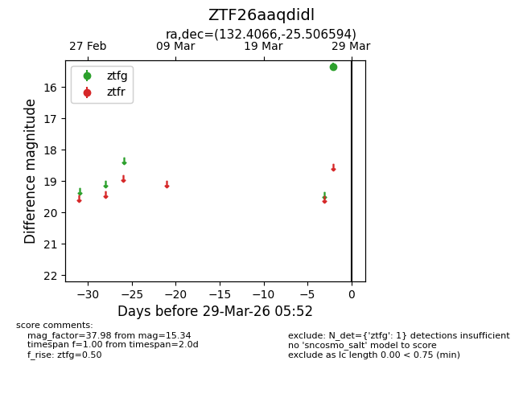
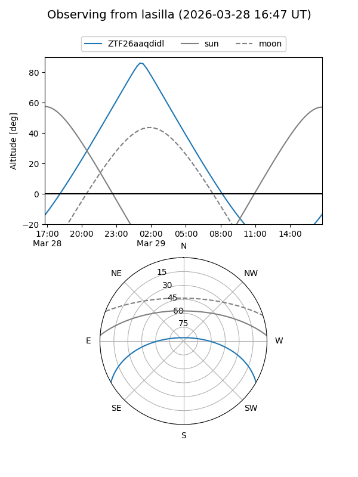
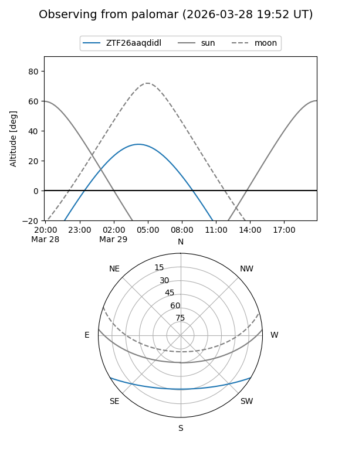

ZTF26aaqdidl
Target ZTF26aaqdidl at 2026-03-29 05:55
Aliases and brokers:
FINK: link
Lasair: link
ALeRCE: link
alt names
ZTF26aaqdidl (ztf,fink_ztf)
Coordinates:
equatorial (ra, dec) = 132.4066,-25.50659
equatorial (HMS+DMS) = 08:49:37.59,-25:30:23.74
galactic (l, b) = (249.6764,+11.52285)
Flags:
Photometry:
last ztfg=15.34
1 ztfg detections
Lightcurve

Visibility


Additional plots